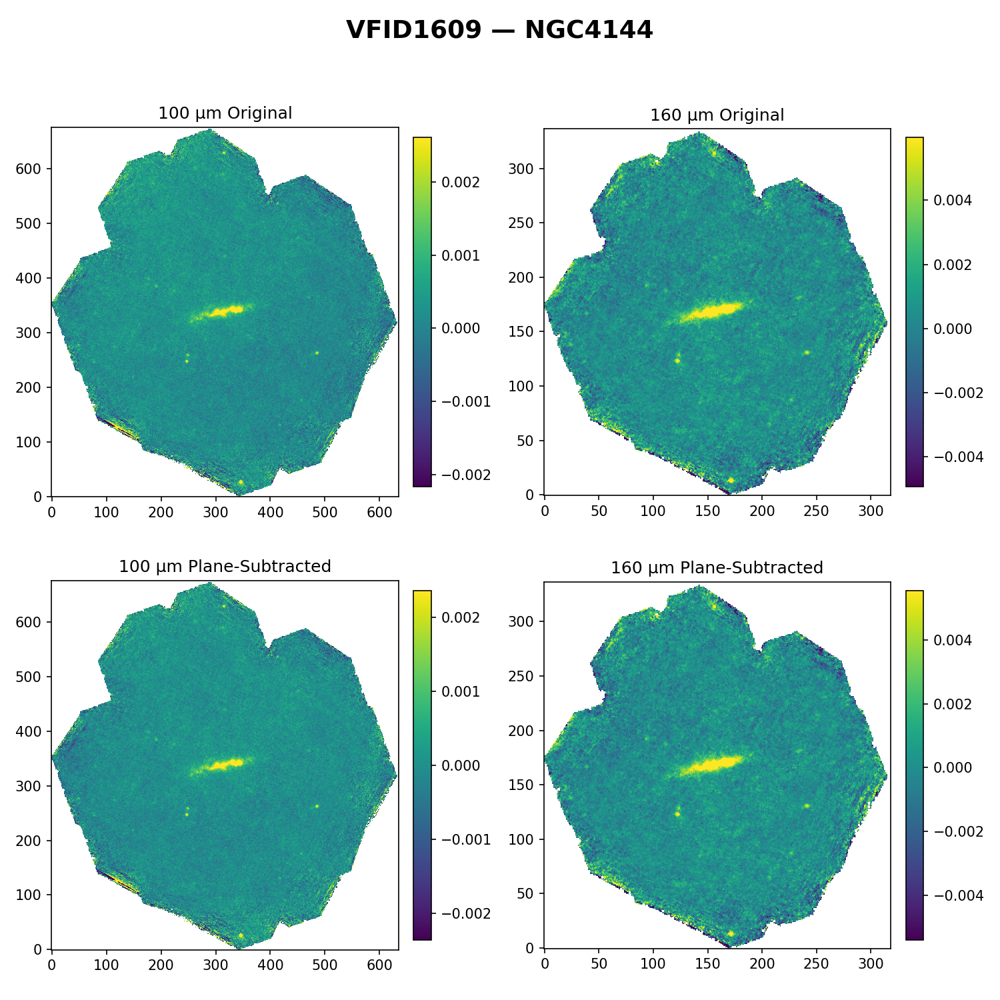

VFID1609
PreviousVFID1374
NextVFID1643
Galaxy Data:
| VFID | Name | Legacy image | Herschel-UnimapBlue (70microns) | Herschel-UnimapGreen (100microns) | Herschel-UnimapRed (160microns) | RA | DEC |
|---|
| VFID1609 | NGC4144 |  |  |  |  | 182.4929951 | 46.45753608 |
AP06 Aperture on Masked Herschel Images:
| Herschel-UnimapBlue (70microns) | Herschel-UnimapGreen (100microns) | Herschel-UnimapRed (160microns) |
|---|
| | |
All 8 Apertures on Legacy Survey Images:
| Herschel-UnimapBlue (70microns) | Herschel-UnimapGreen (100microns) | Herschel-UnimapRed (160microns) |
|---|
 |  |  |
All 8 Apertures on Masked Herschel Images:
| Herschel-UnimapBlue (70microns) | Herschel-UnimapGreen (100microns) | Herschel-UnimapRed (160microns) |
|---|
 |  |  |
Background Comparison:
| Comparison of Raw Background to Plane-Subtracted Background |
|---|
 |
Background-Subtracted Flux Histograms:
Background-Subtracted Vertical Cut Profiles:
Background-Subtracted Horizontal Cut Profiles:
Photometry Results:
| Photometry profiles |
|---|
 |
PreviousVFID1374
NextVFID1643


{kind=link}
{kind=link}
{kind=link}
{kind=link}
{kind=link}
{kind=link}
{kind=link}